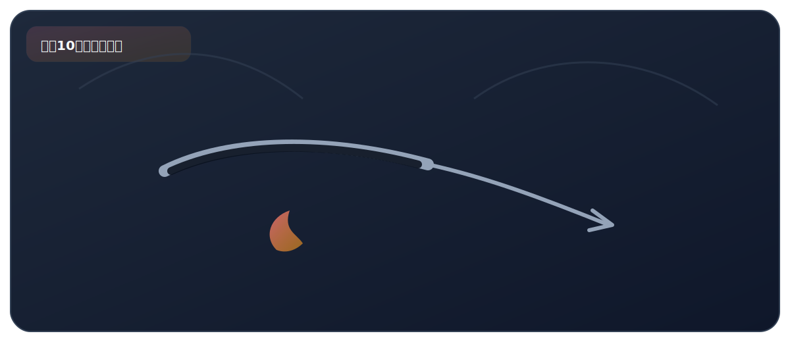

实验十、木炭的还原性

来自 PDF《化学实验基础知识及课本实验总结》的整理。建议：先读"实验原理"，再背"操作顺序"，最后用"误差分析/注意事项"拿分。
实验目标
- 通过“木炭还原氧化铜”理解还原反应与 CO2 的检验。
必背方程式
- 2CuO + C 高温===== 2Cu + CO2↑
核心原理
- 木炭（C）具有还原性：在高温下把 CuO 还原成 Cu；C 自身被氧化生成 CO2。
- 需要用灯罩（网罩聚焦火焰）提高加热温度。
关键步骤（怎么做）
- 将木炭粉与氧化铜粉末充分混合，装入硬质玻璃管中。
- 连接装置，将导管通入盛有澄清石灰水的试管中。
- 用酒精灯（加灯罩）先预热再集中加热，观察固体颜色变化和石灰水变化。
现象（看到什么）
- 黑色粉末中逐渐出现红色固体（铜）。
- 澄清石灰水变浑浊（生成 CaCO3）。
高频考点（怎么拿分）
- CO2 的检验方法：通入澄清石灰水，若变浑浊则证明含有 CO2。
- 描述现象时应写“黑色粉末中出现红色固体”，不要写“生成铜”（现象不能出现产物名称，只描述看到的）。
- 实验结束操作：先撤导管后熄灭酒精灯（防止石灰水倒吸）；然后夹紧橡皮管待冷却（防止灼热的铜被空气中的 O2 重新氧化）。
- 注意：木炭是混合物（主要成分是碳）。
安全提醒
- 需要高温加热，注意防烫。
- 实验结束先撤导管后灭灯，防止石灰水倒吸。
PDF摘录（原文提取，供对照）
化学方程式
- 灯罩的作用 澄清石灰水 的作用 聚拢火焰，使温度更高，简单的说就是为了提高温度。
- 检验生成的气体；
- 现象：澄清的石灰水变浑浊。
- 化学方程式：
- 加热一段时间后，① 中黑色粉末中出现红色物质；
- ② 中产生气泡，澄清的石灰水变浑浊。
实验现象
- 注意：刚开始预热，试管 ② 中立即产生气泡，但石灰水不变 浑浊，原因是试管 ① 中的空气受热膨胀进入试管 ② 中产生 气泡。
注意事项
- ◼ 反应结束后，应该先撤去导管后熄火酒精灯，防止发生倒吸；
- 接着用弹簧夹夹紧橡皮管，待试管 ① 冷却后再把试管里的粉 末倒出,必须要密封的原因是防止灼热的铜又被氧气氧化成氧 化铜。
- 注意 木炭是混合物。